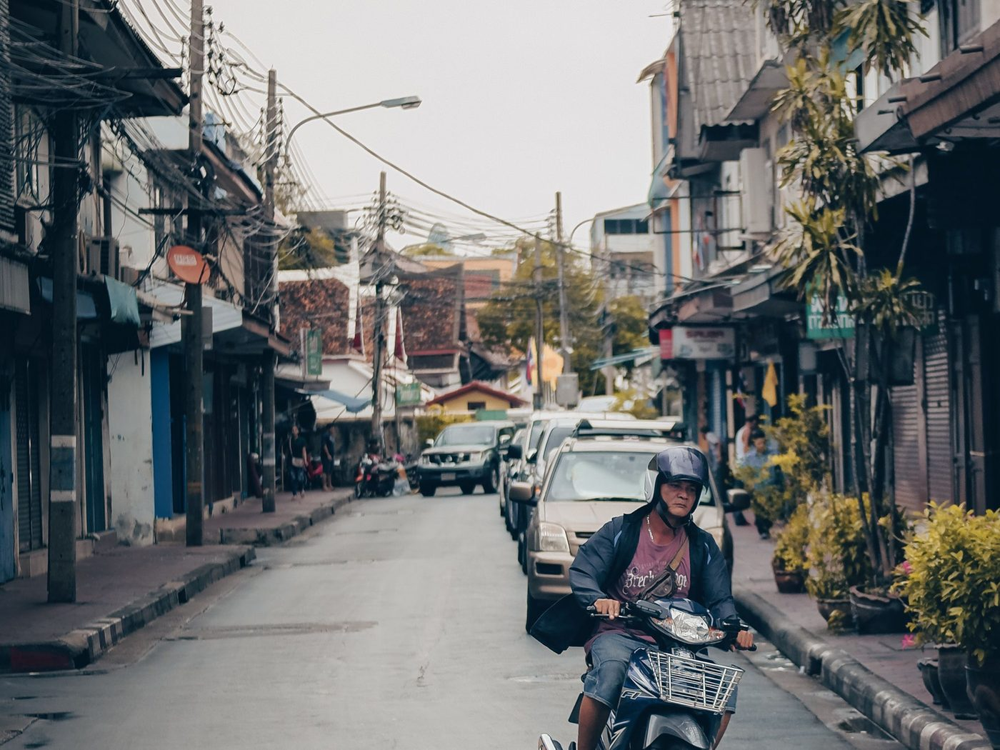
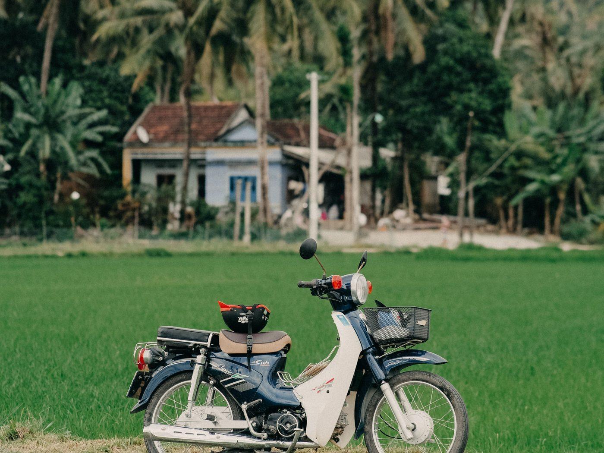

냐짱 겨울 시즌 오토바이: 사서 타고 되팔기

냐짱에서 겨울을 나는 기간은 3, 4, 6개월입니다. 렌트가 불편해지고 구매가 모험이 아니게 되는 기간이죠. 여기 동(VND) 기준의 간단한 계산과 명확한 시나리오가 있습니다: 사서, 한 시즌 타고, 출국 전에 판다.
렌트 계산
냐짱 스쿠터 렌트는 월 단위로 계산되며, 요금은 시즌, 모델, 기간에 따라 다릅니다. 공식으로 직접 계산해 보세요: 월 요금 × 개월 수 + 보증금. 여기에 보통 잊는 두 가지를 더하세요:
- 보증금 — 기간 내내 묶여 있고, 반납 시 오토바이 상태에 따라 돌려받습니다.
- 파손 책임. 남의 오토바이에 난 흠집은 반납 때 내 돈이 되고, 평가는 주인이 합니다.
렌트의 또 다른 단점: 무엇을 탈지 고를 수 없습니다. 남는 오토바이를 받고, 매달 바뀔 수도 있습니다.
구매 계산
저희 방식은 재고에서 고르는 내 50cc 오토바이입니다: 잘 달리고, 50cc가 적힌 블루카드(cà vẹt), 오일 교환, 타이어와 브레이크 점검, 냐짱에서 인도. 가격은 카탈로그에 있습니다.
그다음은 유지비뿐입니다: 휘발유, 가끔 오일, 드물게 작은 수리. 유지비는 따로 정리했습니다: 오토바이 유지비, 50cc 연비.

사람들이 잊는 계산의 세 번째 부분
렌트비는 완전히 사라집니다. 산 오토바이는 시즌이 끝나면 팔 수 있고 — 돈의 일부가 돌아옵니다. 그래서 정직한 비교는 이렇습니다:
렌트: 요금 × 개월 = 지출, 끝나면 0.
구매: 오토바이 가격 − 판매한 금액 = 시즌의 실제 비용.
재판매 가격은 아무도 미리 말할 수 없고 저희도 약속하지 않습니다: 모델, 상태, 주행거리, 그리고 무엇보다 서류에 달려 있습니다. 하지만 원리는 간단합니다 — 시즌이 길수록 구매가 유리합니다. 렌트비는 매달 늘지만 오토바이 가치는 천천히 떨어지니까요.
따로 솔직하게: 저희는 재매입을 하지 않습니다. 오토바이를 되사지 않고 일정 비율도 약속하지 않습니다. 직접 파셔야 하며, 방법은 출국 전 냐짱에서 50cc 오토바이 파는 법에 있습니다.

왜 시즌용으로 50cc인가
베트남에서는 50cm³ 이하 차량에 이륜차 면허 종류가 필요하지 않습니다 — 이것이 선택의 주된 이유입니다. 맞는 종류가 있는 국제면허 없이 110cc 스쿠터를 타면 늘 위험하지만, 50cc는 그렇지 않습니다.
저희가 항상 덧붙이는 단서: 등록증의 50cm³ 이하는 필요조건일 뿐 모든 것의 면제가 아닙니다. 교통 규칙, 헬멧, 나이, 체류 조건은 여전히 지켜야 하며, 현재 요건은 구매 시점에 확인해야 합니다. 자세히 — 50cc 면허 규정.
시즌 전체 시나리오
- 첫 주. 재고에서 오토바이를 고르고, 직접 보고(냐짱 남부, 9:00–21:00), 블루카드를 확인하고, 결제하고 내 오토바이로 떠납니다.
- 시즌. 탑니다. 주행거리에 맞춰 오일을 갈고, 타이어와 브레이크를 살피고, 자물쇠로 주차합니다. 시작할 때 유용한 글 — 오토바이와 첫 주.
- 출국 2–3주 전. 세차, 새 오일, 솔직한 사진, 두세 채널에 동시에 판매 글.
- 인도. 블루카드 원본을 넘기기 전에 돈을 받습니다. 후가 아니라.
구매가 맞지 않는 사람
냐짱에 2–3주만 있다면 렌트하세요. 구매 비용을 뽑을 시간이 없습니다. 직접 탈 계획이 없고 택시로 다닌다면 더더욱. 구매는 약 2–3개월부터, 그리고 마지막에 2주 정도 판매에 시간을 쓸 수 있을 때 의미가 있습니다.
요약
3–6개월 시즌이라면 서류가 깨끗한 내 50cc 오토바이는 지출이 아니라 일부 돌려받는 구매입니다: 되팔 때 돈의 일부가 돌아오고, 그동안 렌트 업체에 의존하지 않고 내 오토바이를 탑니다. 지금 재고를 보고 렌트 vs 구매와 비교해 보세요.